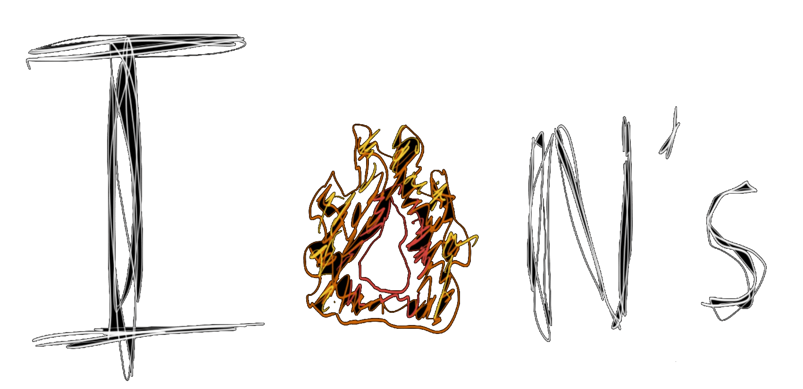

Fire Viewer
Loading…
NIFC Interagency Data
to
All Causes
Lightning
Arson
Equipment Use
Debris
Campfire
Power Line
Vehicle
Miscellaneous
Unknown
Theme
Dark Mode
Light Mode
Projection
Flat (Mercator)
Globe
Basemap
Dark Matter
Satellite
Topography
Clean Light Map
Fill Opacity
Units
Imperial (acres)
Metric (ha)
Miles (mi²)
Kilometers (km²)
Terrain
Off
Hillshade
3D Terrain
3D Exaggeration
Borders
Off
National
Subnational
By Decade
Cancel